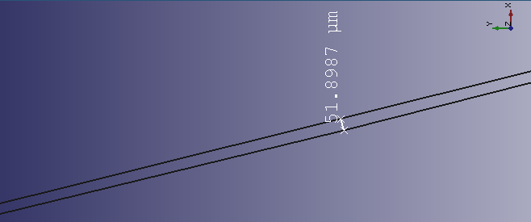
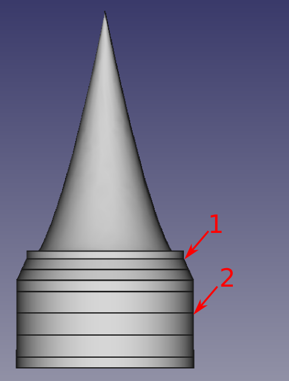
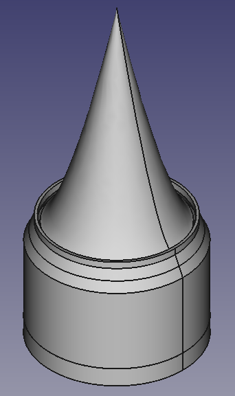
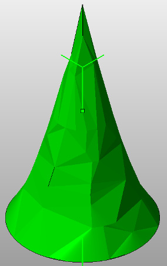
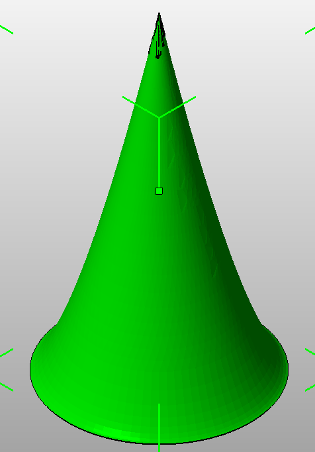
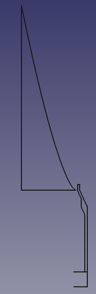
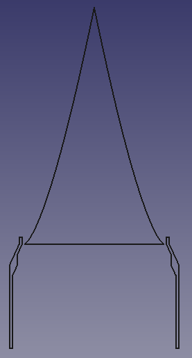
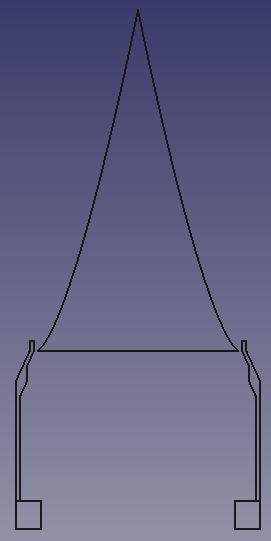

Forums » Discussion »
Accurately Modelling the Nozzle's Curves in CadQuery
Added by Jeremy Wright over 7 years ago
I started a feature request on CQ's GitHub issue tracker for this. A conversation we had in last week's #EngineerSpeak Hangout got me thinking, and I finally got some time to do an experiment this morning. It's a mongrel of FreeCAD and CQ code, but shows that it is possible to create a clean curve (based on a bunch of points) that's pretty close to what you get with a polyline. The curve in the screenshot is from the Dean aerospike CQ example I did a few months ago. The left-most point is the tip of the spike, and the right-most is where the curve stops at the outside of the top of the chamber (or at least what I think of as the chamber).
Replies (23)
RE: Accurately Modelling the Nozzle's Curves in CadQuery - Added by J. Simmons over 7 years ago
Wow, that is very impressive. I need to go dig out my math text books and find a measurable test for how good the fit is, but judging from the image it is clearly very close.
Here's the image Jeremy was talking about:

Note, as Jeremy points out, this is a rendering of both the polyline from the original points and the fitted curve. Like I said, impressive.
Oh, and Jeremy, this looks like you are looking at just the aerospike nozzle. The tip is at the left hand side of the image and the part of the throat defined by the nozzle is on the right. The throat would be fully defined by adding in the geometry for the chamber so that we can define the outer radius of the throat.
RE: Accurately Modelling the Nozzle's Curves in CadQuery - Added by Jeremy Wright over 7 years ago
I was pleased, and a little surprised, by the results. I thought I'd have to do a lot more coding to get that to work.
Here's a shot that's zoomed in a little bit. The line on the bottom includes 2 segments of the polyline, and the line on the top is the first segment of the curve.

The throat would be fully defined by adding in the geometry for the chamber so that we can define the outer radius of the throat.
Ok, that makes sense. I started with just the curve on the spike because it's a very recognizable part of the geometry, and it's also the part I thought would give us the most trouble in CadQuery. I hope to check with the FreeCAD devs on where the 26 point limitation comes from, and then to add the code to CQ for this operation soon-ish. Then I'll be able to redo the entire nozzle outline and revolve it. As we were talking about last night, if we can do this nozzle, we can do the cold gas thruster nozzle.
I need to go dig out my math text books and find a measurable test for how good the fit is, but judging from the image it is clearly very close.
I'm very interested to see how that works out. Using CodeCAD gives us some options for checking the math that we wouldn't have with traditional CAD.
Polyline_BCurve_Comparison_2.png (5.9 kB)
{kind=link}
RE: Accurately Modelling the Nozzle's Curves in CadQuery - Added by Jeremy Wright over 7 years ago
After getting some feedback on the FreeCAD forums, I switched to an interpolated BSpline for this. The implementation of this in CadQuery will be much cleaner (no limitation on the number of points), and the curve is even more true to the original points of the polyline.
RE: Accurately Modelling the Nozzle's Curves in CadQuery - Added by Jeremy Wright over 7 years ago
A user on GitHub brought up another potential shortcoming with CadQuery. FreeCAD's STL export code (which CadQuery's is built on) doesn't allow for you to vary the quality of the file, so you can end up with a huge file that has tolerances that are way more than your printer could ever do. I'm new to 3D printing, so I wasn't aware that was a problem. It's not a show stopper for Yavin, but is something to keep in mind.
RE: Accurately Modelling the Nozzle's Curves in CadQuery - Added by J. Simmons over 7 years ago
Just now getting around to reviewing your last note, Jeremy. Very interesting. Keep us posted on how the feature develops. I imagine we will want to control this even for Yavin just to match generated geometry to actual specifications (we shouldn't be driving crazy tolerances that are not expected and cannot be manufactured).
RE: Accurately Modelling the Nozzle's Curves in CadQuery - Added by Jeremy Wright over 7 years ago
A function needs to be created to shortcut the conversion of Pint units from meters to mm for FreeCAD. The following are some things that the function needs to have/do.
- Have a short name like 'mm' to keep the code it's used in clean.
- Use a global units registry (pass in the one you're using)
- Check for Pint unit type 'length' before doing conversion.
- Throw an error if not of type 'length'
- Return .to(units.millimeter).magnitude
RE: Accurately Modelling the Nozzle's Curves in CadQuery - Added by Jeremy Wright over 7 years ago
The function above has been added, and I also did some clean up of the pressure vessel calc code.
RE: Accurately Modelling the Nozzle's Curves in CadQuery - Added by Jeremy Wright over 7 years ago
This is now identified as CQ-01 from our current sprint planning work .
I started recreating the Aerospike example we've done previously, smoothing out the segmented sections with the spline. The logic is that if I can recreate that, our current nozzle shouldn't be able to stump CadQuery. As you can see from the image, the spike worked out great. It's one smooth segment. The chamber is where I start to have questions. I've marked two areas on the chamber with numbers.

- There are sharper steps in area 1 that look like they need to stay sharp (created as a polyline).
- There are steps in the wall (inner and outer) in area 2 that look like they should really be created with a spline.
So, should I really be using a spline in area 2, or am I overthinking this?
The reason I'm chasing this is that I've confirmed a bug in how CadQuery's polyline operation works that would likely keep us from creating the current nozzle/chamber combo properly if we need to use a spline in area 2. I'll file the bug no matter what, but I'll have to make sure it's fixed during this sprint to call CQ-01 finished if it's a show stopper.
Aerospike_Steps_2.png (28 kB)
{kind=link}
RE: Accurately Modelling the Nozzle's Curves in CadQuery - Added by J. Simmons over 7 years ago
These are interesting results. I should probably look at the raw data (the array of points from my dissertation research) to see if there is something funny in the data. I say this, because the points in section 2 (both inside and outside) should be straight lines at constant radii (one for inside and one for outside). The changes for the inner geometry in section 2 should be driven by just the nozzle (the spike). In fact, the only reason there are multiple data points in section 2 is because the underlying engineering analysis measured internal state properties at those positions along the length of the engine and my research reported all design data (including geometry) at every location where state properties were measured.
Section 1, on the other hand, looks spot on to me. This is the one part of the chamber wall where there is any geometry change and it looks just like what you posted.
Hope that helps clarify things.
RE: Accurately Modelling the Nozzle's Curves in CadQuery - Added by Jeremy Wright over 7 years ago
Thanks J. Based on your feedback, I was able to clean up the points.

It doesn't look like much of a change until you start running your mouse cursor over the model. The original I did had many sections, including on the spike. The spike is now one solid, and the chamber has sections only where it's appropriate to have them.
Aerospike_with_Spline.png (29.5 kB)
{kind=link}
RE: Accurately Modelling the Nozzle's Curves in CadQuery - Added by J. Simmons over 7 years ago
That looks great, Jeremy. We should scale it down (I printed it at 1/8 actual size - points are in inches) and run it off on my printer to see how it compares to my openscad version.
RE: Accurately Modelling the Nozzle's Curves in CadQuery - Added by Jeremy Wright over 7 years ago
Do you want each part as a separate STL? The spike, chamber, and injector plate aren't connected.
RE: Accurately Modelling the Nozzle's Curves in CadQuery - Added by Jeremy Wright over 7 years ago
Ran into a pretty big snag with the spike. Even after doing what's recommended to get a better quality STL export from FreeCAD, I still get the following when I open the STL in Netfabb Basic.

There's an issue filed for CadQuery to export with arbitrary resolution, but if I can't figure out how to get FreeCAD to export a decent spike in the first place, we may have to create a PBI just for figuring this out.
Bad_Stl_Export.png (22.4 kB)
{kind=link}
RE: Accurately Modelling the Nozzle's Curves in CadQuery - Added by Jeremy Wright over 7 years ago
Of course I'd think of a solution right after I hit Submit on the last post.

Getting that better export adds another step in the export process where you have to convert the solid to a mesh in the Mesh Workbench. The spike in the image has some problems, but there are several more settings to try. We should create a PBI to figure out what the optimal mesh generation settings are and document them.
Better_STL_Export.png (27.6 kB)
{kind=link}
RE: Accurately Modelling the Nozzle's Curves in CadQuery - Added by Jeremy Wright over 7 years ago
Try printing this one J. It's still not perfect, but Netfabb says it's ok.
RE: Accurately Modelling the Nozzle's Curves in CadQuery - Added by J. Simmons over 7 years ago
Wow, it is crazy how much difference those settings make. @Jeremy, to answer your earlier question, I want a single whole part to print. Is the attached STL file a single part or just one of the elements?
Oh, and I agree about the new CQ PBI. I think you can just go ahead and add it (right Chris?).
RE: Accurately Modelling the Nozzle's Curves in CadQuery - Added by J. Simmons over 7 years ago
Oh, and just a quick note, I am out of town. So I won't be able to print this up until next week.
RE: Accurately Modelling the Nozzle's Curves in CadQuery - Added by Jeremy Wright over 7 years ago
Is the attached STL file a single part or just one of the elements?
It's just the spike. The spike and the chamber are not connected, so I think the spike will fall through if you print the parts together.
Oh, and I agree about the new CQ PBI. I think you can just go ahead and add it (right Chris?).
Maybe we can wordsmith it tomorrow night?
RE: Accurately Modelling the Nozzle's Curves in CadQuery - Added by J. Simmons over 7 years ago
Hmm, the spike falling through sounds odd. We should look at this tomorrow. The list of points we are working with should have the portion of the aerospike that is inside the chamber and those points should be connected to the injector.
Happy to wordsmith the new CQ PBI tomorrow night.
RE: Accurately Modelling the Nozzle's Curves in CadQuery - Added by Jeremy Wright over 7 years ago
Here's the outline of the spike, chamber and injector plate before they're revolved.

And here's a section view after revolution. FreeCAD doesn't want to do a section view for the injector plate for some reason, so it doesn't show up in this cross-section.

There were mounting plate points in the original file that were commented out, so I ignored them. Should I be pulling those in?
{kind=link}
{kind=link}
RE: Accurately Modelling the Nozzle's Curves in CadQuery - Added by Jeremy Wright over 7 years ago
Had a doh! moment after I posted the last section. FreeCAD couldn't section the injector plate/ring because it wasn't an enclosed solid. Here's a better section view of everything.

{kind=link}
RE: Accurately Modelling the Nozzle's Curves in CadQuery - Added by Jeremy Wright about 7 years ago
CQ-02 was created to address a shortfall in CadQuery that would have kept us from properly drawing the outline of the entire thruster nozzle-chamber assembly. The fix for that is now waiting for comment in a CadQuery pull request, and I expect it to be merged with only minor adjustments, if any.
https://github.com/dcowden/cadquery/issues/102#issuecomment-147520375
RE: Accurately Modelling the Nozzle's Curves in CadQuery - Added by Jeremy Wright about 7 years ago
Pint has been embedded with the CadQuery module for FreeCAD to ensure that users have easy access to units handling.
https://github.com/jmwright/cadquery-freecad-module/issues/64
Everyone who wants to work on the CAD for Yavin should upgrade to the latest commit of the module. You can download the latest commit here
(1-23/23)